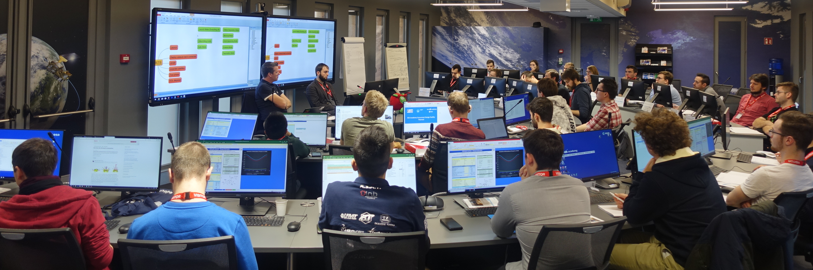
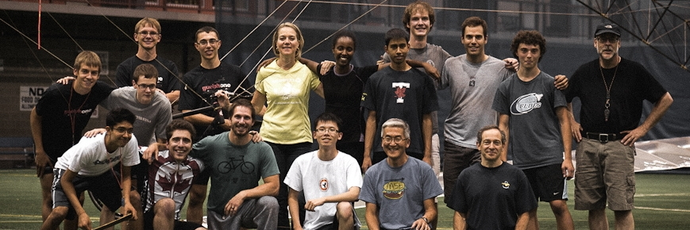

Alan F. Pettit
Space and Satellites

Mynaric Lasercom
- Developed and designed a coarse pointing assembly for a space-based laser communication terminal
- Created designs and drawings for optomechanical flight parts and ground support equipment
DEDRA CubeSat Mission
- Subsystem lead for communications and data handling of a debris analysis CubeSat
- Attended the ESA concurrent engineering workshop for CubeSats
GNSS Radio Occultation
- Simulated Global Navigation Satellite System radio occultation events using raytracing
- Implemented atmospheric and ionospheric models in C++ for a software simulator
The Astronautics Lab Podcast
- Produced and published an educational podcast focused on space science and engineering
High Performance Vehicles

U of T Human Powered Vehicle Design Team
- Project Director for the Tempest utility speedbike project
- Managed a team of 30 people
- Optimized monocoque carbon fiber vehicle structures
Aerovelo
- Team member for the Atlas human powered helicopter project
- Won the $250 000 USD American Helicopter Society Igor I. Sikorsky Prize
TUfast Eco Team
- Designed and built high performance carbon fiber rims for an urban concept car
- Optimized composite plies using Altair HyperMesh software
Miscellaneous
Failure Analysis
- Applied a multitude of non-destructive and destructive analysis methods
- Prepared samples and produced high quality microscope and topographic images
- Determined the cause of failure in machine components
Diamond like Carbon Coatings
- Designed and carried out coating tests using novel techniques
- Determined a time efficient method for measuring coating wear resistance
Compliant Mechanism Design
- Trained in compliant mechanism design for flexural components